PSV Kent heel veel goede voetballers, hier een top 10 van de beste PSV spelers volgens DutchMultiMedia
-
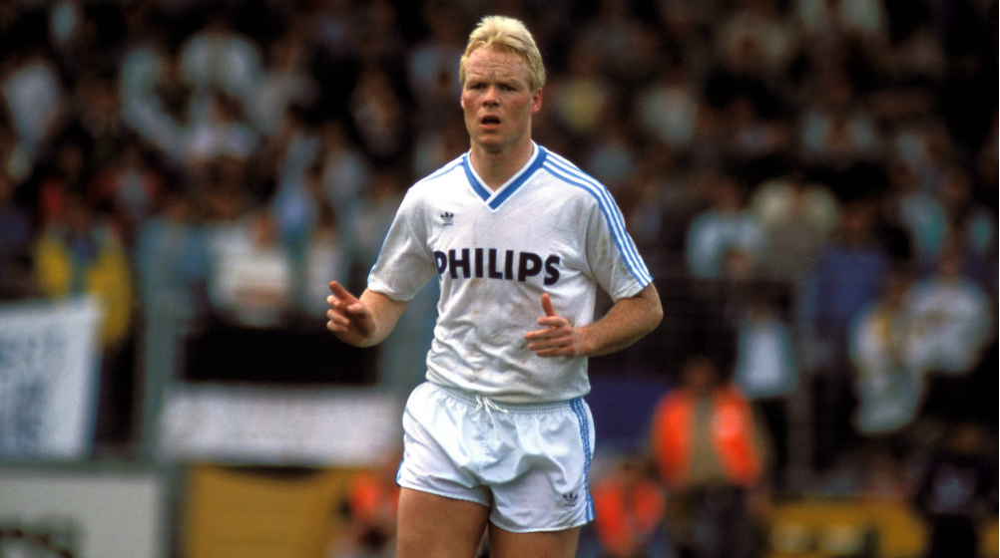
10. Ronald Koeman
Koeman (Zaandam, 21 maart 1963) is een Nederlands voetbaltrainer en voormalig profvoetballer. In Nederland werd Koeman vier keer kampioen (met Ajax in 1984/1985 en met PSV in 1986/1987, 1987/1988 en 1988/1989).
Hij won onder meer het EK 1988 met het Nederlands voetbalelftal en de Europacup I in zowel 1987/1988 (met PSV) als in 1991/1992 (met FC Barcelona). Hij maakte in 533 competitieduels 193 doelpunten.
-
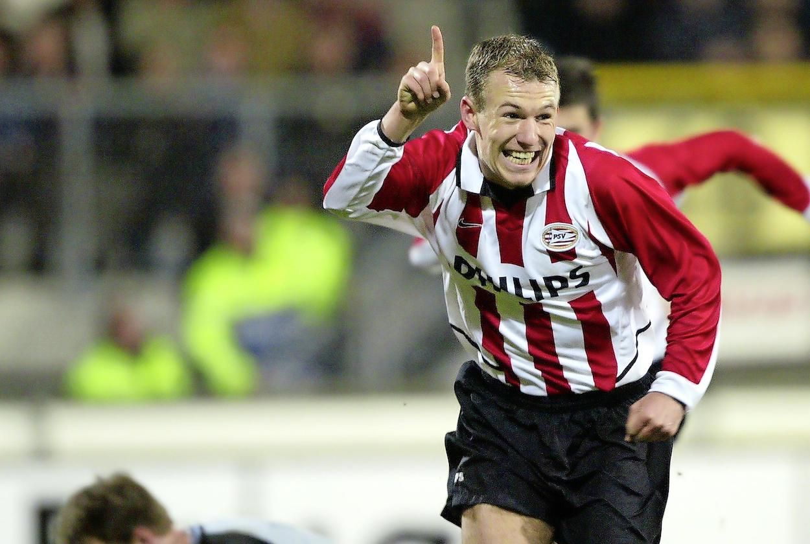
9. Arjen Robben
Robben (Bedum, 23 januari 1984) speelde als vleugelaanvaller speelde en kwam tussen 2003 en 2017 96 keer uit voor het Nederlands elftal, waarvoor hij zevenendertig keer scoorde.
Robben debuteerde in december 2000 bij FC Groningen in het betaalde voetbal. Na anderhalf seizoen verkaste hij naar PSV, waar hij in 2003 zijn eerste landstitel won en uitgeroepen werd tot Nederlands Talent van het Jaar.
In 2004 verhuisde hij voor achttien miljoen euro naar Chelsea. Hoewel geplaagd door blessures pakte Robben met The Blues twee landskampioenschappen op rij (2005 en 2006).
Na drie jaar bij Chelsea vertrok Robben in 2007 voor vijfendertig miljoen euro naar Real Madrid. Hij groeide uit tot sleutelspeler in het elftal dat in 2008 de Spaanse titel pakte en speelde er samen met vijf landgenoten; Van Nistelrooij, Sneijder, Drenthe, Van der Vaart en Huntelaar.
In de zomer van 2009 maakte hij de overstap naar Bayern München. Met de Duitse Rekordmeister won hij twintig prijzen, waaronder de UEFA Champions League, de UEFA Super Cup en vijfmaal de Duitse dubbel. Robben speelde bij Bayern tien jaar samen in de aanval met Franck Ribéry. Zij kregen hier als tweetal de bijnaam ‘Robbery’.
Robben debuteerde in april 2003 op negentienjarige leeftijd in het Nederlands elftal. Hij vertegenwoordigde zijn land op de Europese kampioenschappen van 2004, 2008 en 2012 en de wereldkampioenschappen van 2006, 2010 en 2014. Tijdens de WK’s van 2010 en 2014 werd hij genomineerd voor de Gouden Bal. In 2014 werd Robben als eerste voetballer sinds Ruud Gullit (1987) verkozen tot Nederlands Sportman van het Jaar.
In juli 2021 maakte hij bekend definitief te stoppen met zijn voetbalcarrière.
-
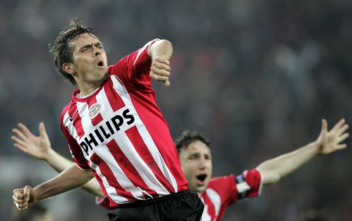
8. Phillip ‘John William’ Cocu
Cocu (Eindhoven, 29 oktober 1970) kwam voornamelijk uit als middenvelder, maar werd wanneer nodig ook opgesteld als aanvaller of verdediger. Hij stond als speler het grootste gedeelte van zijn loopbaan onder contract bij PSV, Vitesse en FC Barcelona.
Daarnaast speelde hij 101 wedstrijden voor het Nederlands elftal. Kenmerkend voor Cocu waren zijn multifunctionaliteit, leiderschap, overzicht en passing. Hij beëindigde zijn actieve voetbalcarrière in 2008.
Prijzen als speler:
PSV
- Eredivisie: 1996/97, 2004/05, 2005/06, 2006/07
- KNVB beker: 1995/96, 2004/05
- Johan Cruijff Schaal: 1996, 1997
FC Barcelona
- UEFA Super Cup: 1997
- Primera División: 1998/99
Verenigde Arabische Emiraten - Al-Jazira Club
- GCC Champions League: 2007
-
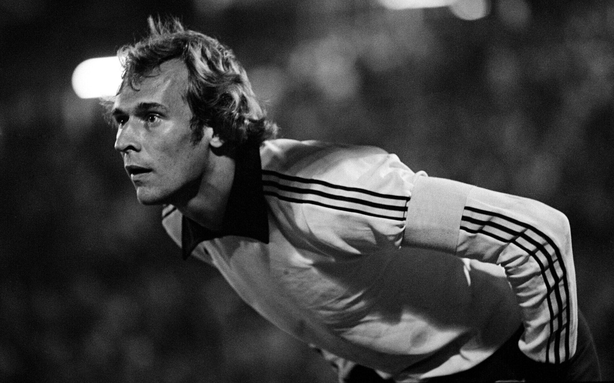
7. Jan van Beveren
- Seizoenen bij PSV: 1970–1980
- Wedstrijden: 291
Van Beveren (Amsterdam, 5 maart 1948 – Beaumont (Texas) (Verenigde Staten), 26 juni 2011) was doelman, die voor onder meer Sparta en PSV speelde. Hij kwam 32 keer uit voor het Nederlands voetbalelftal.
In 1970 maakt Van Beveren de overstap naar PSV, waarvoor hij tot en met 1980 ruim 200 competitiewedstrijden speelt. Hij werd in de seizoenen 1974/75, 1975/76 en 1977/78 landskampioen en won in 1973/74 en 1975/76 de KNVB beker met de Eindhovense club.
Van Beveren won in het seizoen 1977/78 de UEFA Cup met PSV, de eerste Europese prijs in de clubhistorie. Hij speelde in zijn totale carrière 46 wedstrijden in Europees verband (allemaal voor PSV). Daarvan waren er 11 in de Europacup 1, 14 in de Europa Cup II en 21 in de UEFA Cup.
-
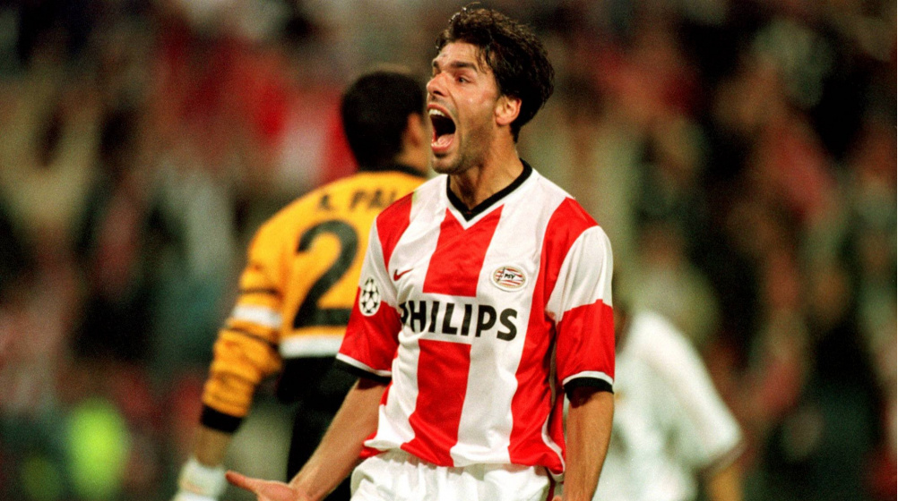
6. Ruud van Nistelrooij
- Seizoenen bij PSV: 1998–2001
- Wedstrijden: 67
- Doelpunten: 62
Rutgerus Johannes Martinus (Ruud) van Nistelrooij (Oss, 1 juli 1976) speelde doorgaans centraal in de aanval speelde. Hij speelde van 1993 tot en met 2012 voor achtereenvolgens FC Den Bosch, sc Heerenveen, PSV, Manchester United, Real Madrid, Hamburger SV en Málaga CF.
Hij werd landskampioen in Nederland, Engeland en Spanje en in alle drie die landen ook minimaal één keer nationaal topscorer. Van Nistelrooij kwam zeventig keer uit voor het Nederlands voetbalelftal en scoorde daarin 35 doelpunten.
In de zomer van 1998 contracteerde PSV Van Nistelrooij voor 5 jaar. PSV moest sc Heerenveen een bedrag van 12 miljoen gulden (5,4 miljoen euro) betalen, op dat moment een recordbedrag voor een binnenlandse transfer. Van Nistelrooij werd succesvol bij PSV. Van Nistelrooij kwam in het eerste seizoen tot 31 doelpunten in de competitie.
In het seizoen erna scoorde hij 29 keer in 23 wedstrijden. Van Nistelrooij raakte tijdens het seizoen geblesseerd. Van Nistelrooij stond in de belangstelling van enkele buitenlandse clubs, maar besloot nog een jaar te blijven.
Op 8 april 2001 zit Alex Ferguson op de tribune bij Ajax-PSV om Van Nistelrooij te bekijken. Eind april worden de onderhandelingen dan geopend. Op 23 april komt persbureau Reuters met een bericht: Van Nistelrooij naar Manchester United. Het transferbedrag is 67 miljoen gulden (30,4 miljoen euro), 2 miljoen gulden meer dan het jaar daarvoor en een recordbedrag in de Premier League. Ook nu tekende hij een contract voor vijf jaar.
-
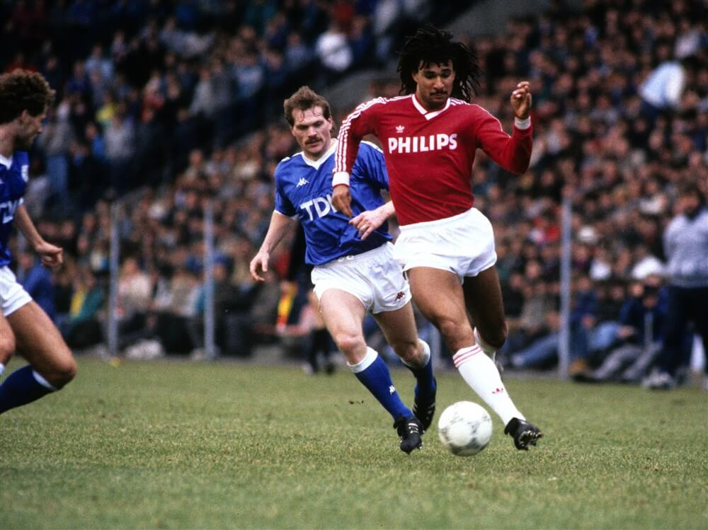
5. Ruud Gullit
- Seizoenen bij PSV: 1985–1987
- Wedstrijden: 68
- Doelpunten: 46
Rudi Dil (Amsterdam, 1 september 1962) won diverse grote prijzen, waaronder meermaals de Europacup I. Hij wordt algemeen erkend als een van de beste Nederlandse voetballers ooit en was onderdeel van de zogenaamde ‘gouden generatie’ die in 1988 Europees kampioen werd en waarvan hij aanvoerder was. De tweevoudig Wereldvoetballer van het jaar en eenmalig Europees voetballer van het jaar werd door oud-voetballer Pelé in maart 2004 vermeld in de opgestelde Lijst FIFA 100 beste spelers.
In de seizoenen 1985/86 en 1986/87 komt Gullit voor PSV uit. Het is een succesvolle periode, met respectievelijk 24 en 22 doelpunten, twee Nederlandse landstitels en een titel als Nederlands Voetballer van het Jaar en winnaar van de Gouden Bal (1987).
Ook in Oranje was hij inmiddels een vaste waarde en was nadrukkelijk in beeld bij de buitenlandse topclubs. Gullit forceerde een vertrek door in een interview in tijdschrift Nieuwe Revu het beleid van PSV te bekritiseren.
Dit hoewel hij in 2009 in een interview in het programma Andere Tijden Sport beweerde dat de eigenlijke reden voor het interview was om het vertrek van manager en technisch directeur Hans Kraay sr. te forceren en dat hij op dat moment niet bij PSV weg wilde. Kort hierna, medio 1987, vertrok Gullit naar AC Milan, voor 16,5 miljoen gulden, een recordbedrag in die tijd.
-
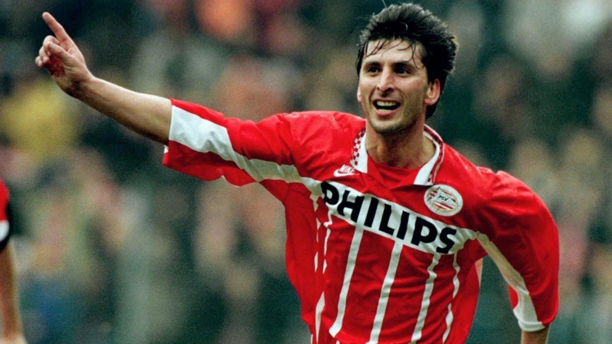
4. Luc Nilis
- Seizoenen bij PSV: 1994–2000
- Wedstrijden: 164
- Doelpunten: 110
Luc Gilbert Cyrille Nilis (Hasselt, 25 mei 1967) was van 1988 tot en met 2000 international voor het Belgisch voetbalelftal, waarvoor hij 56 wedstrijden speelde en tien keer scoorde.
Nilis was een tweevoetige spits die bekendstond om zijn traptechniek. De aanvaller debuteerde in de jaren 80 bij KFC Winterslag, waarna hij de overstap maakte naar RSC Anderlecht.
Hoewel hij bij paars-wit regelmatig speelde en vaak tot de uitblinkers behoorde, kreeg Nilis in België nooit de erkenning waar hij op hoopte. Zo veroverde hij nooit de Belgische Gouden Schoen en werd hij pas verkozen tot Profvoetballer van het Jaar toen hij in Nederland speelde.
Nilis verhuisde in 1994 naar PSV, waar hij de Nederlandse Gouden Schoen won en twee keer topschutter werd. In 2000 verhuisde hij naar Aston Villa, waar een beenbreuk al snel een einde maakte aan zijn carrière.
-
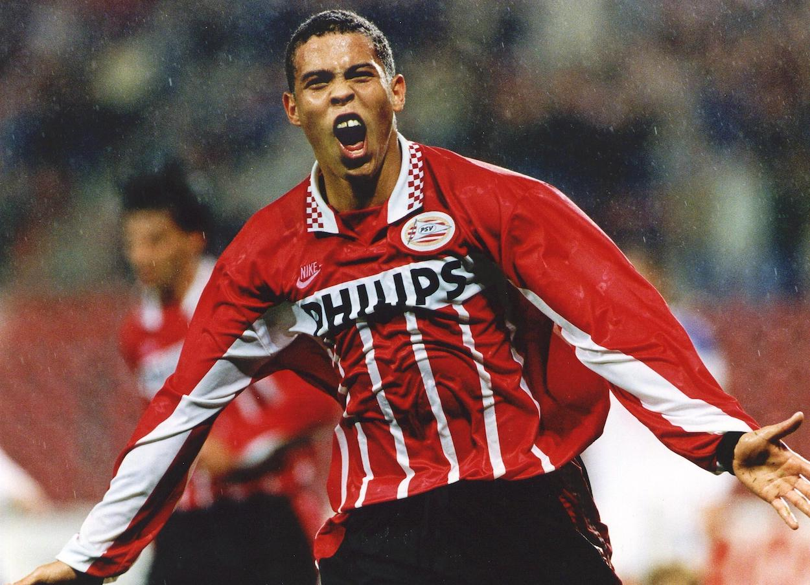
3. Ronaldo Luís Nazário de Lima
- Seizoenen bij PSV: 1994–1996
- Wedstrijden: 46
- Doelpunten: 42
Ronaldo Luís Nazário de Lima (Rio de Janeiro,18 september 1976), beter bekend als Ronaldo, speelde in zijn thuisland voor Cruzeiro, waar zijn carrière begon, en Corinthians, waar hij in 2011 zijn loopbaan beëindigde.
Tussendoor kwam hij in Europa uit voor PSV, FC Barcelona, Internazionale, Real Madrid en AC Milan. Namens Brazilië scoorde Ronaldo 62 keer in 98 interlands en won hij met zijn vaderland vijf hoofdprijzen, waaronder twee wereldtitels.
Hij is uitgeroepen tot Wereldvoetballer van het Jaar in 1996, 1997 en 2002. Zijn bekendste bijnaam luidt O Fenômeno (“Het Fenomeen”). Ondanks zijn vele successen als speler werd zijn carrière afgeremd door steeds terugkerende knieblessures. Ook kampte hij in de latere jaren van zijn carrière met overgewicht, waardoor ook wel naar hem verwezen wordt als “dikke Ronaldo”, om een onderscheid te maken met Cristiano Ronaldo.
Sinds september 2018 is Ronaldo clubeigenaar van Real Valladolid nadat hij 51% van de clubaandelen kocht.
-
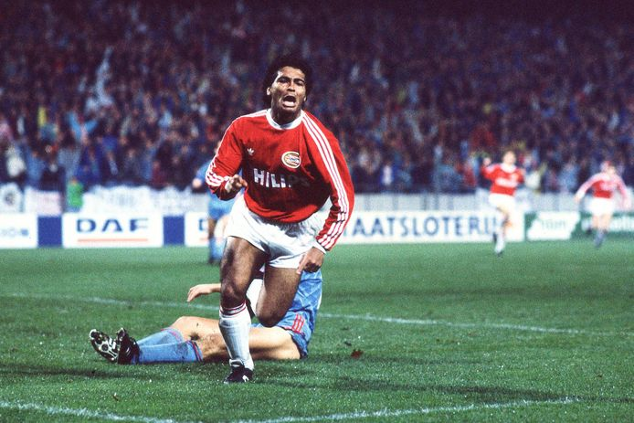
2. Romário
- Seizoenen bij PSV: 1988–1993
- Wedstrijden: 109
- Doelpunten: 98
Romário de Souza Faria (Rio de Janeiro, 29 januari 1966), ‘O Baixinho’ (Het kleintje) is één van de beste spitsen aller tijden.
Gedurende zijn spelerscarrière maakte hij meer dan 1000 doelpunten en won hij diverse grote prijzen zoals het wereldkampioenschap voetbal, tweemaal de Copa América, de Confederations Cup en diverse landskampioenschappen, waaronder de Eredivisie en de Primera División.
Na de Olympische Spelen van 1988 werd hij aangekocht door PSV. In Nederland kende Romário veel succes met drie landstitels en twee bekers.
FC Barcelona werd in 1993 zijn nieuwe club. Romário maakte bij de Catalaanse club deel uit van het illustere Dream Team. Hij vormde een aanvalsduo met de Bulgaar Hristo Stoitchkov en de Deen Michael Laudrup.
-
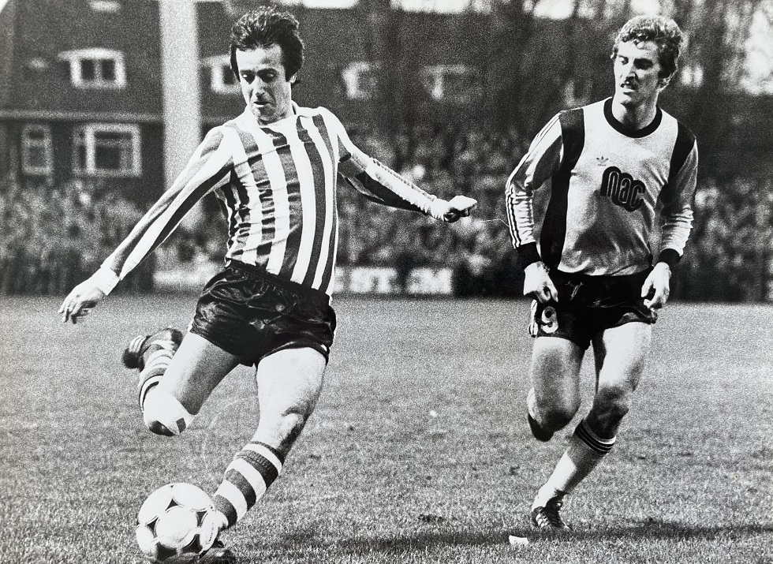
1. Willy van der Kuijlen
- Seizoenen bij PSV: 1964 – 1981
- Wedstrijden: 528
- Doelpunten: 308
Nederlands Elftal: 1966–1977 22 wedstrijden (7 doelpunten)
Van der Kuijlen (Helmond, 6 december 1946 – aldaar, 19 april 2021) speelde een leidende rol bij de successen van PSV in de tweede helft van de jaren zeventig. Hij scoorde in ruim zeventien seizoenen in dienst van PSV 308 en in totaal 311 competitiedoelpunten.
Daarmee is hij topscorer aller tijden van de Eredivisie. Vanwege zijn jarenlange trouwe dienst voor de club kreeg Van der Kuijlen de bijnaam ‘Mister PSV’. Een andere bijnaam is ‘Skiete Willy’, vanwege zijn harde schoten met links én rechts.
Met PSV:
- UEFA Cup : 1977/78
- Landskampioen: 1974/75, 1975/76, 1977/78
- KNVB-Beker: 1973/74, 1975/76
Zelf heb ik buiten deze spelers ook nog een paar favoriete:
-
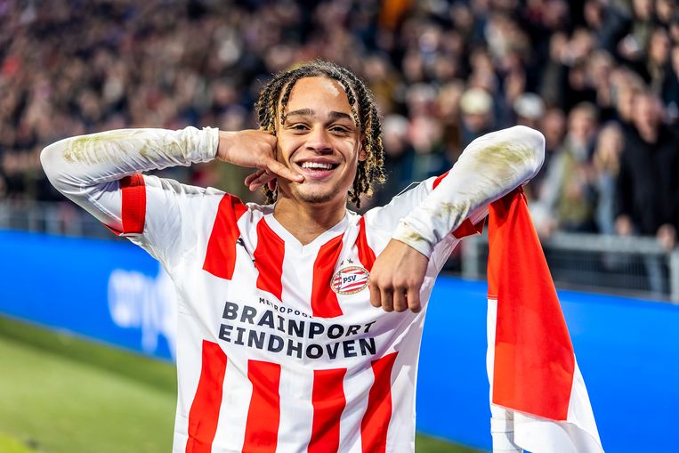
Xavi Simons
-
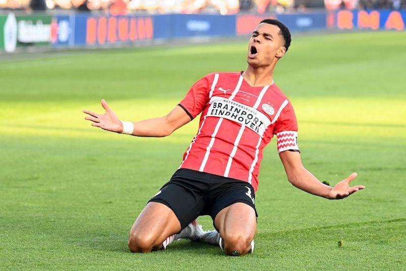
Cody Gakpo
-
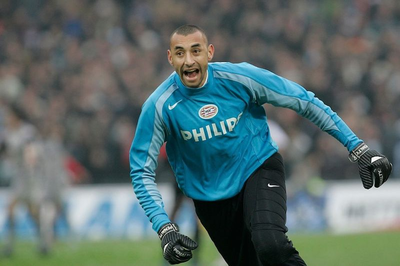
Heurelho Gomes
-
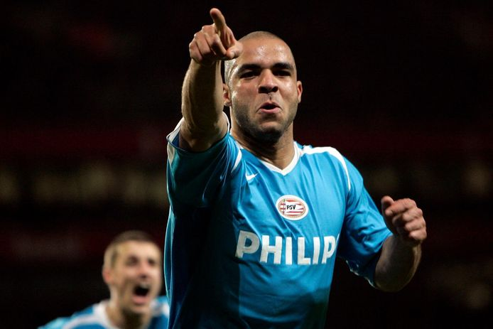
Alex
-
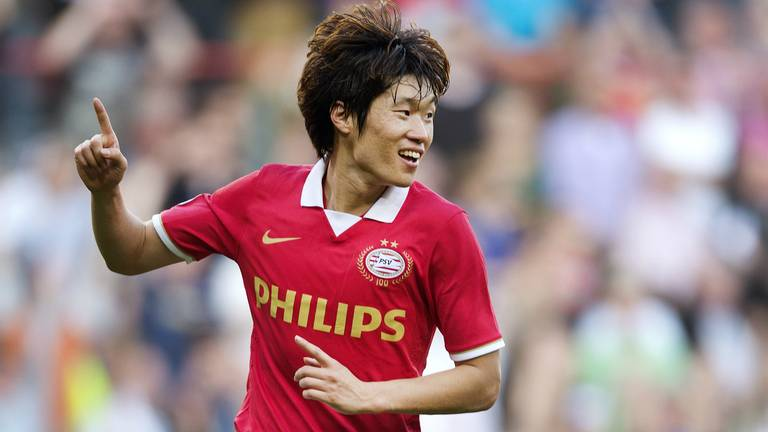
Ji Sung Park
-
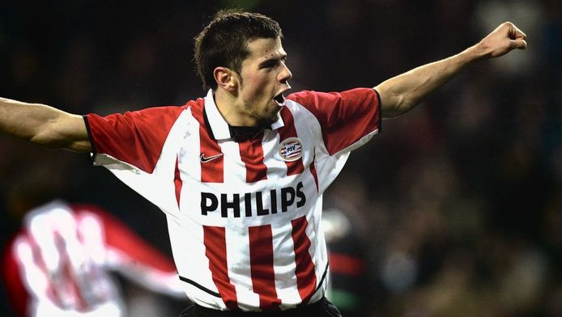
Kezman
-
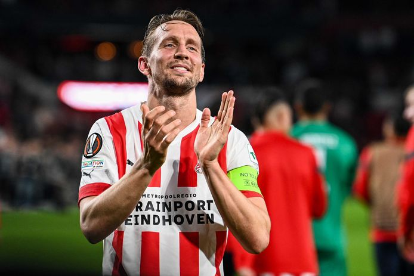
Luuk de Jong
-
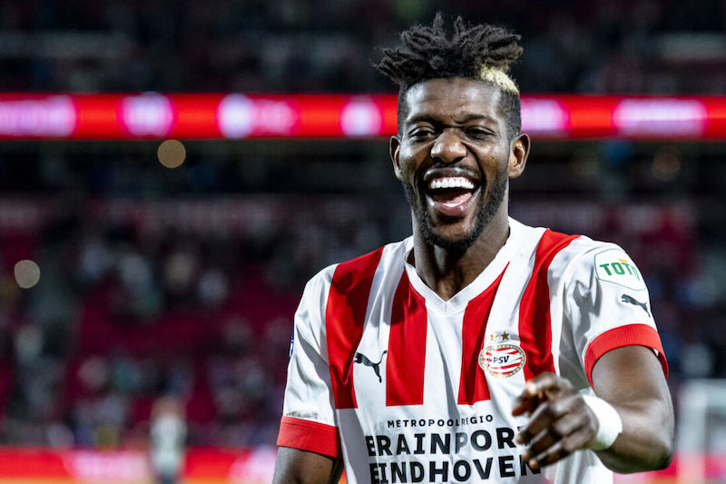
Ibrahim Sangare